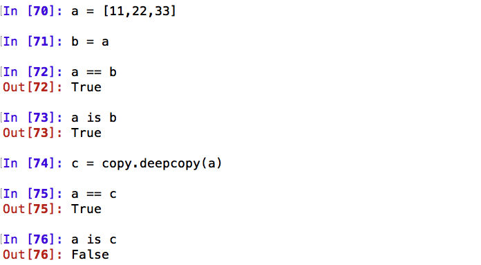

==、is
>>> a = 1000
>>> b = 1000
>>> a == b
True
>>> a is b
False

总结
- is 是比较两个引用是否指向了同一个对象（引用比较）。
- == 是比较两个对象的值是否相等（值比较）。
对象值比较（==）的定义
class Person(object):
def __init__(self, name):
self.name = name
p1 = Person("王胖胖")
p2 = Person("王胖胖")
print("p1 == p2: %s" % (p1 == p2)) # False
print("p1 is p2: %s" % (p1 is p2)) # False
# 定义__eq__方法，重新实现==比较方法
class NewPerson(object):
def __init__(self, name):
self.name = name
def __eq__(self, person_obj):
"""执行==时调用的方法"""
return self.name == person_obj.name
np1 = NewPerson("王胖胖")
np2 = NewPerson("王胖胖")
print("np1 == np2: %s" % (np1 == np2)) # True
print("np1 is np2: %s" % (np1 is np2)) # False